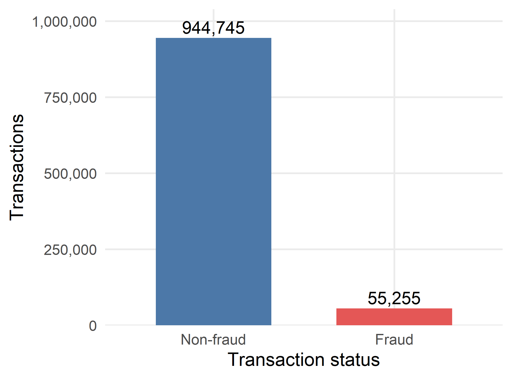
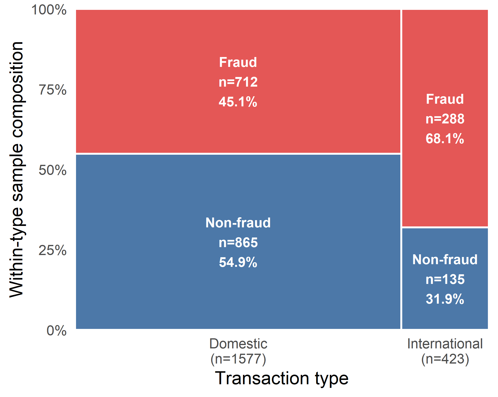
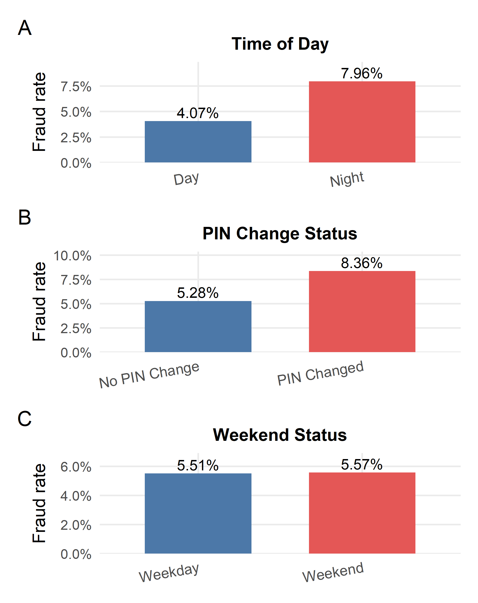
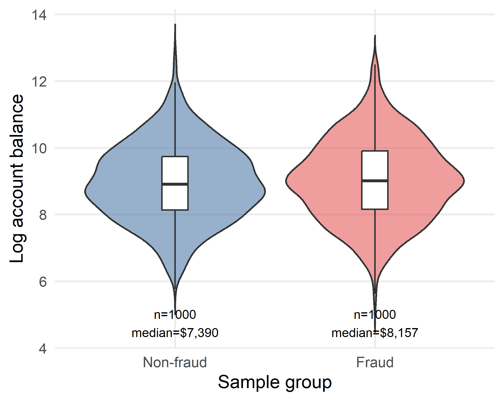
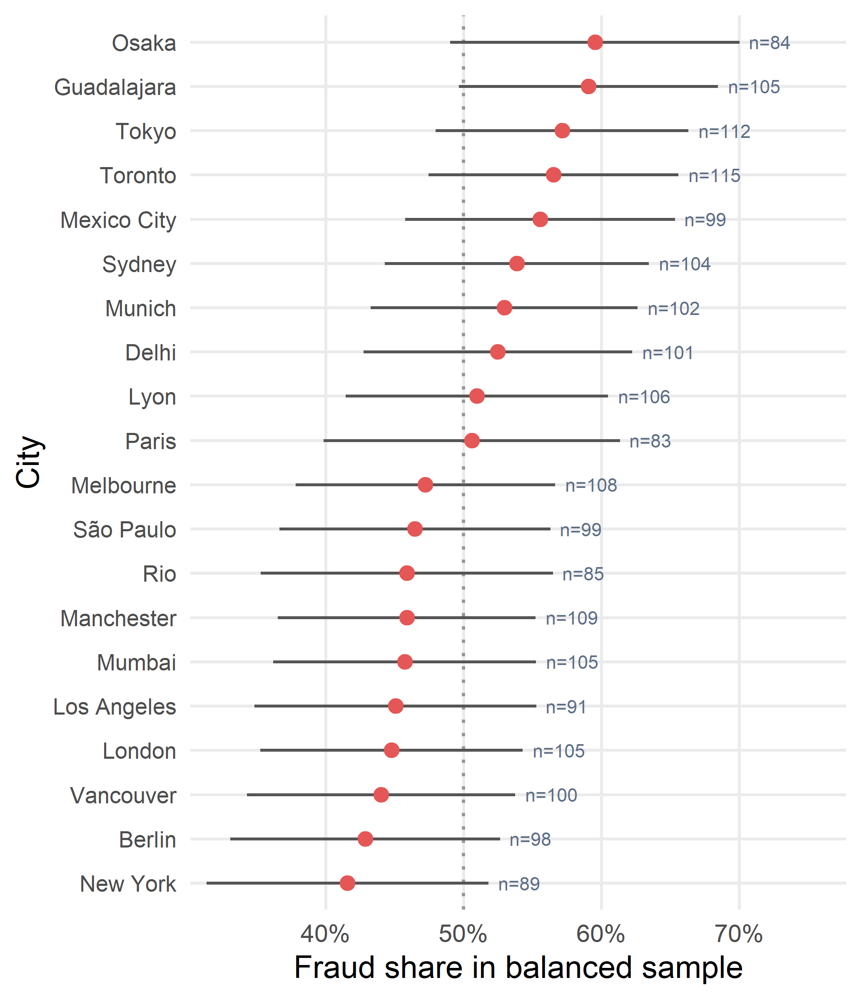
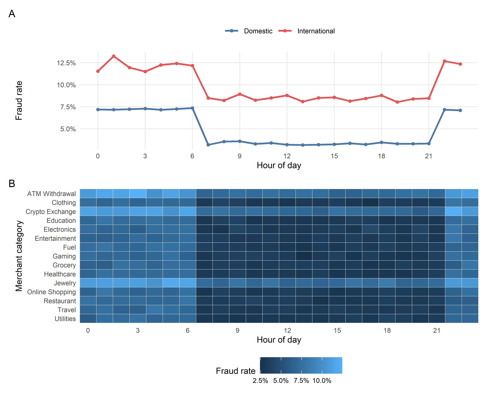

Exploratory Visualization of Fraud Risk Patterns in Bank Transaction Data
Bank transaction fraud is difficult to examine because fraudulent observations are rare and risk patterns may differ across transaction contexts. This paper uses exploratory data analysis and visualization to investigate which transaction characteristics show visible associations with fraud risk in a synthetic dataset of one million bank transactions. The analysis combines descriptive summaries, within-group fraud-rate comparisons, distribution plots, and a merchant-by-hour heatmap. Fraud accounts for 55,255 transactions, or 5.53% of the full dataset, creating a strongly imbalanced outcome. The clearest visual patterns involve repeated failed attempts, late-night and early-morning timing, international transaction status, recent PIN changes, and merchant category. Transactions with two or more failed attempts have substantially higher fraud rates, while ATM withdrawal, jewelry, and crypto exchange transactions appear elevated across multiple hours. In contrast, weekend status, account balance, and city-level variation provide weaker or more cautionary visual separation. Visualization therefore identifies candidate fraud-risk indicators before predictive modeling, although all findings are associative and based on synthetic data.
bank transaction fraud, exploratory data analysis, data visualization, class imbalance, fraud rate
Introduction
Transaction fraud monitoring is important because suspicious activity must be identified within a large volume of legitimate banking transactions. A central challenge is class imbalance: fraudulent transactions usually form a small minority, so raw counts can obscure meaningful differences between transaction groups. A second challenge is interpretability. Before developing a predictive model, analysts need to understand whether observable transaction characteristics display stable and communicable patterns.
Exploratory data analysis (EDA) supports this early stage by summarizing data quality, revealing skewed distributions, and comparing fraud rates across behavioural and contextual variables. Visual analysis does not establish causation, but it can identify candidate indicators for later statistical testing or predictive modeling. It is also useful for communication: analysts, risk managers, and other stakeholders can inspect whether an apparent pattern is consistent across groups or driven by class size, skewness, or a small subset of observations.
This paper asks: Which transaction characteristics show visible associations with fraud risk in bank transaction data? Its contribution is a focused visual comparison across authentication behaviour, transaction timing, international status, recent PIN changes, merchant context, and selected numerical variables. Because fraud is uncommon, the analysis emphasizes within-group rates and proportions rather than raw fraud counts. This paper follows the project proposal’s exploratory scope by prioritizing exploratory visualization over predictive modeling. Although the proposal mentioned that a simple classifier could be developed if time permitted, the primary objective was to identify and explain visible fraud-risk patterns through EDA. The analysis therefore establishes a reproducible evidence base for describing candidate variables and interactions without making causal or predictive claims.
The remainder of the paper reviews relevant fraud-detection and imbalanced-data research, describes the dataset and reproducible EDA methodology, reports univariate, bivariate, and multivariate visual findings, and concludes with practical implications, limitations, and directions for validation.
Previous Work
Fraud-detection research has examined transaction behaviour, authentication signals, temporal activity, and contextual variables as possible inputs to monitoring systems (Abdallah, Maarof, and Zainal 2016). Anomaly-detection research considers how rare observations can be distinguished from dominant normal behaviour (Chandola, Banerjee, and Kumar 2009). Research on imbalanced learning also shows why overall accuracy and raw counts are inadequate when the positive class is uncommon (He and Garcia 2009).
The imbalance problem is especially important in financial transaction data. When legitimate transactions greatly outnumber fraudulent ones, a method can appear accurate while failing to identify the minority class. Recent fraud detection research therefore emphasizes resampling, minority-class synthesis, ensemble methods, and precision-recall-oriented evaluation (Fiore et al. 2019; Kennedy et al. 2024; Mim, Majadi, and Mazumder 2024). These studies are primarily predictive, but their motivation also applies to EDA: population counts and balanced-sample proportions answer different questions and must not be interchanged.
Fraud observations may also overlap substantially with legitimate behaviour. Li et al. describe the combination of class imbalance and class overlap as a central challenge because fraudulent transactions are often designed to resemble ordinary activity (Li et al. 2021). This supports examining multiple dimensions rather than expecting one variable to separate the classes. Authentication behaviour, transaction context, timing, and merchant type may jointly carry more information than an isolated financial amount.
EDA complements predictive methods by exposing distributions, group differences, and possible interactions before a model is fitted (Tukey 1977). Bar charts can compare categorical rates, distribution plots can show overlap, and heatmaps can expose patterns across contextual dimensions. However, many fraud studies move quickly to classifier comparison. The present study instead emphasizes a transparent visual workflow that distinguishes population-rate figures from balanced-sample figures and reports both strong and weak patterns. This study remains exploratory: it identifies visible candidate patterns but does not estimate causal effects or claim predictive performance.
Methodology
Dataset and Variables
The full synthetic dataset was obtained from the Bank Transaction Fraud Detection Dataset hosted on Kaggle (Kaggle n.d.). It contains 1,000,000 transactions and 26 variables. The binary outcome, is_fraud, equals one for a fraudulent transaction and zero otherwise. The full dataset contains 55,255 fraudulent and 944,745 non-fraudulent transactions, corresponding to an overall fraud rate of 5.53%.
Variables examined include transaction type, hour of day, night and weekend indicators, merchant category, failed attempts, account balance, distance from home, city, and recent PIN change. Full-data summaries and fraud-rate calculations are used whenever data/transactions.csv is available.
The variables can be organized into four conceptual groups. Transaction context includes domestic or international status, merchant category, payment method, device type, and location. Temporal context includes hour, night status, and weekend status. Authentication and account context includes failed attempts, recent PIN change, account balance, and credit-related fields. The binary outcome is_fraud provides the common basis for comparing these groups.
Data Preparation
Column names were standardized, the binary outcome was converted to integer form, and readable factors were created for Fraud/Non-fraud, International/Domestic, Night/Day, Weekend/Weekday, and PIN Changed/No PIN Change. Data-quality checks covered missingness, repeated identifiers, duplicate complete rows, and invalid ranges for selected key variables. In the full dataset, these checks found no missing values, duplicate transaction IDs, duplicate rows, or invalid values, so no removal or imputation was required.
A balanced sample containing 1,000 fraud and 1,000 non-fraud observations is used for selected distributional and sample-composition figures. Fraud rates by failed attempts and transaction type are calculated from the full dataset. Because the balanced sample is deliberately constructed, it cannot estimate population prevalence.
Reproducible Analysis Workflow
The paper is written as an executable R Markdown document. The document reads the CSV data, standardizes variables, calculates every displayed summary, and generates each figure during rendering. Supporting functions are stored in a small sourced R file. No static screenshot is used as an analytical result. This design makes the relationship among data, calculations, figures, and written interpretations auditable.
The full dataset is used for counts and fraud-rate estimates, including the failed-attempt comparison in Figure 4. The small balanced sample is used only for selected distributional or sample-composition figures and where a runnable submission sample is required. Every sample-based caption explicitly warns that its shares do not estimate population prevalence. This separation prevents the 50% fraud share of the balanced sample from being confused with the 5.53% fraud rate in the full data.
Analytical Measures
For each category, the descriptive fraud rate is the number of fraudulent transactions divided by the total number of transactions in that category. Within-group sample proportions are calculated separately for fraud and non-fraud cases so that the majority class does not dominate a distribution plot. The city comparison includes approximate 95% intervals to communicate sampling uncertainty. Because the city figure uses a balanced sample rather than a simple random population sample, those intervals are descriptive and should not be interpreted as population estimates.
Visualization Strategy
Bar charts compare rates across binary and categorical variables. A faceted point-range plot compares full-data fraud rates across discrete failed-attempt values and transaction types, with Wilson confidence intervals used to communicate uncertainty. A heatmap combines hour of day and merchant category. For grouped full-data comparisons, total transactions, fraud counts, and fraud rates are calculated directly from df. Findings are described as visual associations, not causal effects.
Exploratory Data Analysis Design
The EDA proceeded in three stages. First, univariate checks established dataset size, class balance, variable ranges, missingness, and duplicate status. This stage determined whether cleaning or imputation was necessary and revealed the extent of outcome imbalance. Second, bivariate comparisons evaluated how fraud rates or within-group distributions changed across transaction type, time of day, recent PIN change, weekend status, failed attempts, account balance, and city. Third, a multivariate heatmap combined merchant category with hour of day to determine whether two contextual dimensions revealed patterns hidden by separate marginal summaries.
The visual encodings were selected for the measurement scale and analytical question. Counts are appropriate for showing class imbalance; rate bars support fair categorical comparisons; a mosaic plot displays both transaction-type frequency and within-type composition; faceted point-and-line displays show fraud rates across discrete failed-attempt values while preserving transaction context and uncertainty; violin and box plots show density, median, and overlap; and a heatmap displays a two-dimensional rate surface. This staged design supports interpretation without presenting EDA as proof of causality or predictive accuracy.
Results
Outcome Imbalance and Dataset Context

Fraud is a minority outcome: the full-data rate is 5.53%, and the non-fraud class is more than seventeen times larger. Consequently, later comparisons use within-group fraud rates rather than raw counts. The data-quality assessment found no missing values, duplicate transaction identifiers, duplicate complete rows, or out-of-range values among the checked fields. Therefore, the observed patterns are not artifacts of an imputation or row-removal procedure.
Transaction Type and Sample Composition

Within the balanced sample, international transactions contain a larger fraud share than domestic transactions. Because fraud and non-fraud cases were sampled equally, this figure describes sample composition and is not a population fraud rate. Specifically, fraud represents 68.1% of sampled international transactions but 45.1% of sampled domestic transactions. The difference is directionally consistent with the full-data international fraud-rate result, but the percentages in Fig. 2 must remain sample-composition measures.
Binary Transaction Characteristics

Night transactions and transactions following a recent PIN change show visibly higher fraud rates than their comparison groups. Night transactions have a 7.96% fraud rate compared with 4.07% during the day. Transactions following a recent PIN change reach 8.36%, compared with 5.28% when no recent change is recorded. Weekend and weekday rates are nearly equal at 5.57% and 5.51%, respectively. This contrast is useful because it shows that not every intuitive context variable separates fraud. These differences are candidate visual indicators, not evidence of causation.
Account Balance and Geographic Variation

The fraud group has a somewhat higher median balance in the balanced sample, but the distributions overlap substantially. Account balance therefore provides weaker standalone separation than failed attempts or transaction context. The sample median is approximately $8,157 for fraud and $7,390 for non-fraud, but the interquartile ranges and violin densities occupy much of the same region. This is a useful negative result: a shift in central tendency does not imply that the variable is an effective standalone discriminator.

City-level sample shares vary, but the uncertainty intervals overlap widely. The city comparison is therefore treated as a weak descriptive pattern rather than a basis for geographic risk claims. The ordering ranges from higher sample shares in Osaka and Guadalajara to lower shares in New York and Berlin, yet most cities contain roughly 80–115 sample observations. The associated uncertainty and synthetic nature of the locations make substantive geographic interpretation inappropriate.
Merchant and Time-Based Patterns

Panel A shows that international transactions have higher fraud rates than domestic transactions across most hours within this synthetic dataset. Both series also rise during late-night and early-morning periods. Panel B adds merchant context: ATM withdrawal, jewelry, and crypto exchange remain visually elevated across several hours, whereas most other categories cluster at lower rates. Aggregated across hours, the three highlighted categories have fraud rates of approximately 8.65–8.74%, compared with roughly 4.62–4.84% for most other merchant categories. Together, the panels show an exploratory pattern in which transaction timing, international status, and merchant context are visually associated with different fraud rates. These associations are candidate indicators within the synthetic dataset, not causal evidence.
Summary of Visual Findings
The strongest visible associations involve repeated failed attempts, late-night and early-morning timing, international status, recent PIN changes, and merchant category. Account balance, weekend status, payment method, device type, distance from home, and city-level variation show weaker separation or require cautious interpretation.
Additional variables mentioned in the proposal, including payment method, device type, transaction amount, distance from home, and other location-related fields, were inspected during EDA; however, they showed weaker or less central visual separation and are therefore summarized rather than displayed as main figures within the IEEE page limit.
Discussion
Interpretation and Practical Relevance
EDA identifies candidate features, reveals the effect of class imbalance, and shows which variables have limited standalone separation. Stronger patterns could inform feature selection, monitoring rules, interactions, or later predictive experiments. Visual prominence alone does not establish statistical significance or operational usefulness.
The results suggest a hierarchy of candidate information. Authentication behaviour is represented by failed attempts and recent PIN change; transaction context is represented by international status and merchant category; and temporal context is represented by night or early-morning activity. These signals are interpretable and can be reviewed by a human analyst. In contrast, weekend status, account balance, and city provide weaker separation. Including weak results is important because an EDA should narrow the candidate set rather than merely collect visually interesting charts.
For an operational fraud-monitoring workflow, the findings could motivate rules or model features such as an indicator for two or more failed attempts, an interaction between merchant category and hour, or additional review when a recent PIN change coincides with an unusual context. Such uses would require validation on out-of-sample real transactions, threshold selection based on false-positive costs, and continuous monitoring for changing fraud behaviour. The figures should therefore be viewed as hypothesis-generating tools, not as decision rules.
Limitations
The dataset is synthetic, so the findings describe patterns within this dataset rather than verified real-world banking behaviour. Location variables are treated as categorical features, not validated geographic relationships. EDA cannot establish causation, and deliberately balanced sample plots cannot estimate population prevalence. The associations should be validated with statistical analysis and predictive evaluation that accounts for class imbalance.
The analysis is also cross-sectional. It does not examine how relationships change across days, customers, or evolving fraud strategies. Aggregated rates may hide repeated activity by the same account, and confidence intervals shown for the balanced city sample do not correct for its case-control sampling design. Finally, no classifier, train-test split, or cost-sensitive evaluation is included because the proposal identified modeling only as an optional extension if time permitted, while the primary deliverable remained EDA and visualization.
Conclusions
This paper used code-generated exploratory visualizations to examine which bank transaction characteristics show visible associations with fraud risk. Fraud represents 5.53% of the full dataset, making rate-based comparisons essential. Repeated failed attempts, night and early-morning timing, international status, recent PIN changes, and merchant category provide the clearest visual patterns. Weekend status, account balance, and city-level variation are weaker or more cautionary findings.
The study demonstrates why visual design and sampling language matter in an imbalanced problem. Full-data rates describe prevalence, while balanced-sample figures describe group composition and distributional differences. Maintaining this distinction prevents overstated conclusions and makes the analysis reproducible.
Future work should validate these exploratory patterns using independent or real transaction data and examine whether the visible relationships remain stable over time. Predictive modeling may be considered as a separate extension after the exploratory findings are validated; it is not part of the present paper’s contribution.